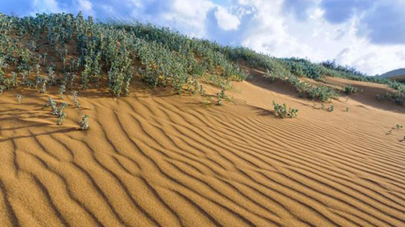

Notícias Nacionais de Malta
sexta-feira, 26 de maio de 2017, 16 : 45
Malta pode se tornar um deserto até o final do século
Os efeitos da mudança climática devem começar em 2030
Malta poderá acabar num deserto até a virada do século, se não houver uma ação imediata sobre a mudança climática, com os efeitos chegando até 2030.
Uma empresa de consultoria começou a analisar Malta em um estudo de caso sobre as melhores práticas, que poderiam ser aplicadas aos países mediterrânicos, para mitigar as alterações climáticas
Em uma entrevista a este jornal, antes de uma conferência na próxima semana, Edwin Ward, presidente da Paragon Europe, referiu-se a um estudo de Joel Guiot, da Universidade de Aix-Marseille.
O pesquisador afirmou que, a menos que o aumento de temperatura fosse mantido abaixo de 1,5ºC, os ecossistemas do Mediterrâneo mudarão, as temperaturas poderão subir em cerca de 5ºC globalmente até 2100, fazendo com que os desertos se expandam pelo sul de Espanha, Malta e Sicília.
"Em 2030 aparecerão os primeiros sinais, alguns deles já podem ser vistos, como as mudanças no nível e na temperatura do mar, as ocorrências mais frequentes da água-vivas e as algas que matam as outras espécies."
"Em poucas décadas, a ilha não será mais da forma como é hoje. A erosão costeira e os períodos de seca irão se intensificar e a pressão sobre nossa infra-estrutura de água aumentará ", disse Ward, acrescentando que isso poderia afetar o turismo.
Ward espera que a conferência da próxima semana ofereça algumas soluções para o desafio das mudanças climáticas. O documento intitulado "Rumo a uma economia zero de carbono depois de 2030", está sendo realizado na segunda-feira em conjunto com o projeto Climate-KIC da UE e com o apoio do Ministério do Meio Ambiente.
Cerca de 200 delegados estarão se reunindo em Malta para discutir os centros urbanos verdes, as finanças verdes e a economia circular.
A conferência está sendo realizada durante a Presidência de Malta do Conselho da UE e o objetivo final será elaborar um conjunto de propostas para uma economia sem carbono.
Já foi relatado que Malta tinha a menor quota de energias renováveis entre os países da UE em 2015.
A quota de energias renováveis no consumo final bruto de energia é um dos principais indicadores da Estratégia Europa 2020.
O objetivo é atingir até 2020 uma percentagem de 20% de energia proveniente de fontes renováveis.
De acordo com o Eurostat, as menores percentagens de energia renováveis foram registadas em Luxemburgo e em Malta (cinco por cento).
Ainda assim, Paragon acredita que Malta poderia ser um teste de caso para o resto do Mediterrâneo.
Malta poderia ser uma base do que Ward chama de "centro de inovação no clima" e compartilhar as melhores práticas com outros países europeus.
Um desses projetos financiados pela UE, que a Paragon já está desenvolvendo, procura formas de recarregar artificialmente o aquífero.
O que você pode fazer?
▪ Lave a roupa em água fria para economizar pelo menos 100 € por ano.
▪ Isolar telhados e paredes para economizar cerca de 50% nos custos com ar-condicionado e sistemas de aquecimento.
▪ Desligar todas as luzes e aparelhos eletrônicos que não estejam em uso.
▪ Troque suas lâmpadas. A utilização de lâmpadas halogênas eficientes, CFLs e LEDs reduzem o uso de energia em até 80 por cento.
▪ Procure por produtos de rótulo ecológico com símbolos de eficiência energética que podem economizar até 30 por cento nas contas de energia elétrica.
▪ Use torneiras e duchas de baixo consumo de água.
▪ Limpe ou troque regularmente os filtros do ar condicionado.
▪ Reduza a temperatura do aquecedor de água para economizar energia e instale isolantes térmicos especialmente projetados para reter o calor, no tanque de armazenamento de água.
▪ Vedar entrada de ar nas janelas e nas portas.
▪ Instale painéis fotovoltaicos e aquecedores de água solares.